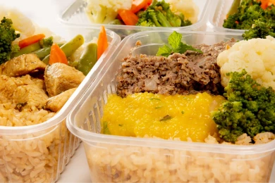
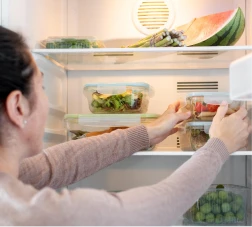
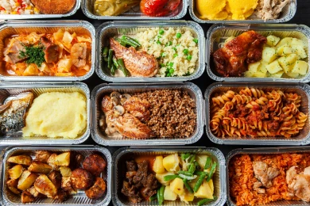

1 - Planeje
Abra a semana do plano e veja os cinco almoços já definidos.
Você otimiza, economiza, e come bem mesmo na correria do dia a dia.
Acesso imediato Material digital 7 dias de garantia
Guia para 2 meses de marmitas sem repetições.
Lista de compras detalhada e com quantidade para cada semana.
Indicação individual do qual marmita para a geladeira e qual vai para o freezer

Abra a semana do plano e veja os cinco almoços já definidos.
Leve a lista da semana, organizada por setor do mercado.
Passo a passo para que o preparo aconteça dentro das horas planejadas.
Monte sabendo o que vai para a geladeira e o que vai ao freezer.

Aqueça, finalize o que precisa de toque fresco e almoce.
Arraste para ver os cinco passos.
Material de apoio incluído
Guia de substituições - troque proteína ou legume sem quebrar o plano.
Equipamento mínimo - o que realmente é necessário e o que é opcional.
Tabela de validade - geladeira, freezer e reaquecimento por tipo de preparo.

Arraste para ver · toque para ampliar.
Os dois seguem o mesmo método. A diferença é o tamanho.
Mais vendido
8 semanas · 40 almoços · 8 listas de compras
Chega de gastar com Fast Food
R$
69,90
R$ 37,90
Em até 12× de R$ 3,92 no cartão.
Garantia de 7 dias · devolução integral
ou comece menor
1 semana · 5 almoços · 1 lista de compras
Para experimentar o método
R$ 9,90
Em até 3× de R$ 3,53 no cartão.
Garantia de 7 dias · devolução integral
Compre, abra o material e faça a primeira semana. Se não servir para a sua rotina, escreva para o suporte dentro de 7 dias e devolvemos o valor integral - sem formulário, sem justificativa.
Foi pensado para uma pessoa: os 5 almoços de cada semana são 5 potes, um para cada dia útil. Quem cozinha para duas ou mais pessoas multiplica as quantidades da lista de compras e dos preparos pelo número de pessoas - o cardápio e a ordem do preparo continuam os mesmos.
Você recebe um material digital de planejamento de refeições, não um caderno de receitas soltas. Dentro dele estão os cardápios da semana, a lista de compras com as quantidades, a ordem dos preparos, a montagem dos potes, o armazenamento e os materiais de apoio do plano que você escolher. A diferença é essa: em vez de receitas para você encaixar na semana, você recebe a semana já montada.
O método é o mesmo nos dois; muda o tamanho. O Básico é uma semana: 5 almoços, 1 lista de compras e o passo a passo do preparo, em 16 páginas. O Completo é oito semanas: 40 almoços, 8 listas de compras, os preparos-base, os rendimentos, o guia de substituições e as orientações de congelamento, em 84 páginas. Os dois têm acesso vitalício. Se você quer conhecer o método antes, o Básico resolve; se já quer os dois meses planejados, o Completo.
Receita na internet tem de sobra. O que dá trabalho é o resto: decidir o que comer nos cinco dias, virar isso em lista de compras, saber quanto comprar, definir a ordem do preparo para tudo sair junto e separar o que vai para a geladeira e o que vai para o freezer. É essa parte que o Cinco Potes já entrega resolvida. Dá para montar tudo sozinho, sim - só custa algumas horas de pesquisa e organização a cada semana.
Depende de onde você mora, do mercado onde compra e do preço dos ingredientes na época, então não dá para cravar um valor que sirva para todo mundo - e a gente prefere não inventar um. O que o material faz é dizer o que comprar e em que quantidade para cada semana, assim você vai ao mercado sabendo o tamanho da compra antes de gastar.
Não prometemos um valor fixo de economia, porque isso depende da rotina e do gasto atual de cada pessoa. O que muda é o mecanismo: você passa a comprar com lista, preparar os cinco almoços de uma vez e começar a semana com a comida pronta. Quando o almoço já está resolvido, cai bastante a chance de pedir algo na correria ou comprar marmita no meio da semana - e normalmente é aí que o dinheiro vaza.
Boa parte do problema de marmita congelada é congelar o que não deveria ir ao freezer, e o material já leva isso em conta na escolha dos pratos. Além disso há orientação de como guardar e como finalizar na hora de comer: alguns pratos pedem um toque fresco só no momento do almoço, e isso vem indicado. Não é igual a comida que acabou de sair da panela, mas fica bem longe daquela marmita aguada que ninguém quer almoçar.
Você não precisa decidir isso por conta. Cada preparo vem indicado: o que fica na geladeira para os primeiros dias e o que vai para o freezer. Junto com isso há a tabela de validade, com o tempo de cada tipo de preparo e como reaquecer. Essa parte faz parte do planejamento, não é um detalhe que sobra para você.
Não precisa ter prática na cozinha. As receitas foram escolhidas para serem simples e o preparo vem em passo a passo, na ordem certa para tudo sair junto. Sobre equipamento, há uma seção que lista o mínimo necessário e o que é apenas opcional - a ideia é funcionar em cozinha comum.
Existe um guia de substituições com as trocas de proteína e de legume que mantêm o preparo e a lista funcionando. Assim você troca o que não gosta ou não achou sem precisar abandonar o planejamento da semana. Tempero e ponto de sabor ficam do jeito que você está acostumado.
As quantidades de cada preparo são calculadas para fechar os cinco potes da semana, e os rendimentos vêm indicados para você conferir na hora de montar. Não trabalhamos com gramagem fechada nem com cálculo de calorias: quem come mais ou come menos ajusta a proporção no pote, em vez de seguir um número padrão.
Não. É um planejamento prático de refeições: resolve o que comer, o que comprar e como preparar. Não é dieta, não tem cálculo nutricional e não substitui a orientação de um nutricionista para o seu caso.
Assim que o pagamento é confirmado, o acesso é liberado e enviado para o e-mail da compra. Dá para usar no celular ou imprimir e deixar na cozinha. O acesso é vitalício: comprou uma vez, é seu, e você pode voltar nas semanas quantas vezes quiser.
Você compra, abre o material e vê de perto como ele funciona. Se não fizer sentido para a sua rotina, pode pedir o reembolso dentro de 7 dias: fale com o nosso suporte - o botão do WhatsApp fica aqui na página - ou solicite direto na plataforma de pagamento, e o valor é devolvido integralmente. O prazo para o dinheiro voltar segue o da forma de pagamento que você usou.